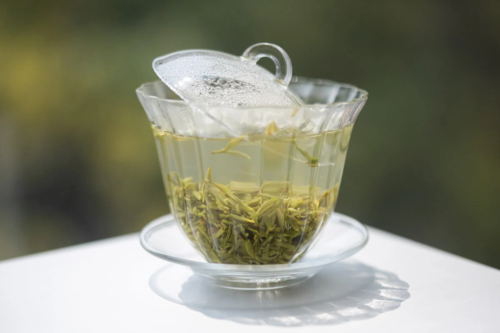
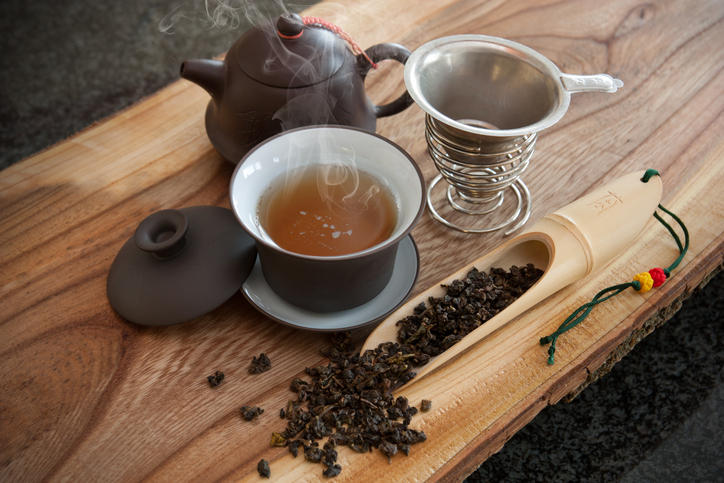
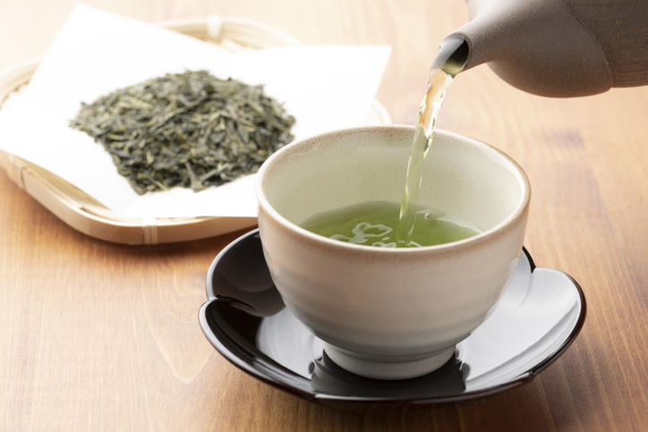
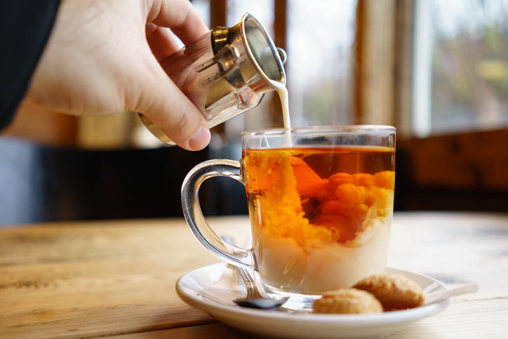
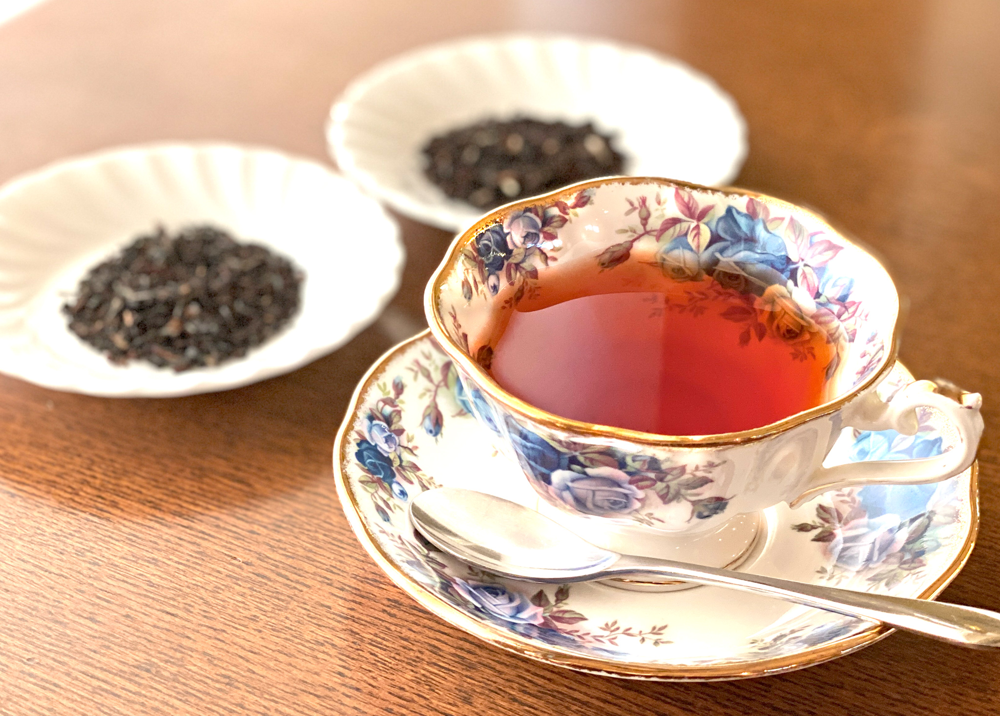
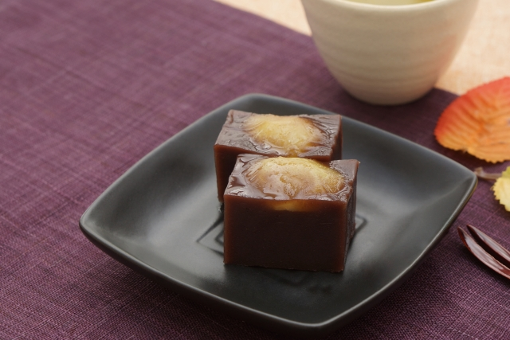
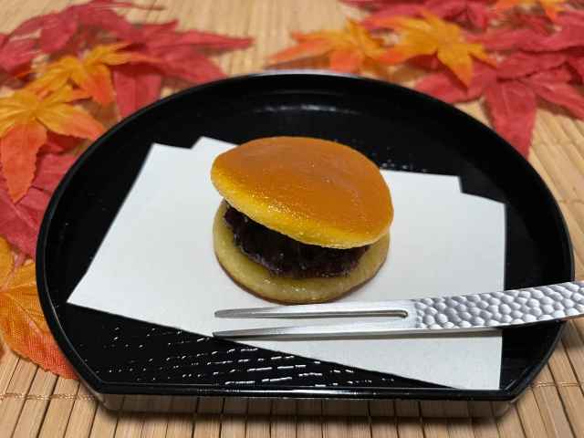
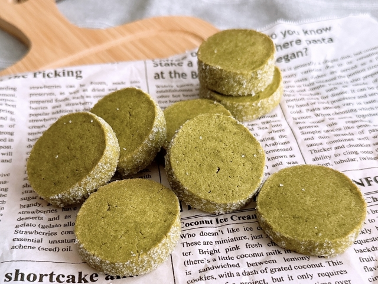
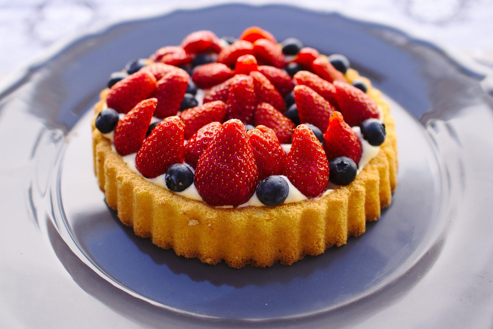

１. 龍井茶（ロンジン）
中国浙江省・杭州を代表する名茶で、清明節前の早摘みは特に高級。茶葉を釜で押し付けるように炒る
「平炒青」の製法で、扁平な形状が特徴。栗のような香ばしい香りと柔らかな甘みがあり、渋みは極めて控えめ。
TEA
中国

２. 碧螺春（ビローチュン）

４. 青茶（チンチャ）
２. 碧螺春（ビローチュン）
江蘇省・太湖周辺の名茶。産地は桃や梨などの果樹園に囲まれており、茶葉が果樹の香りを吸うと言われる。ぐるりと巻いた螺旋状の芽茶で、甘い花香と爽やかな余韻が人気。
江蘇省・太湖周辺の名茶。産地は桃や梨などの果樹園に囲まれており、茶葉が果樹の香りを吸うと言われる。ぐるりと巻いた螺旋状の芽茶で、甘い花香と爽やかな余韻が人気。
３. 普洱茶（プーアル茶）
雲南省で作られる後発酵茶。生（生茶）は青々しい風味で月日と共に熟成し、熟（熟茶）は発酵工程を人工的に進めた深いコクと円やかな甘みが特徴。
雲南省で作られる後発酵茶。生（生茶）は青々しい風味で月日と共に熟成し、熟（熟茶）は発酵工程を人工的に進めた深いコクと円やかな甘みが特徴。
４. 青茶（チンチャ）
半発酵茶で、発酵した茶褐色の葉と不発酵の緑色の葉により、青っぽく見える。 茶葉をしっかり発酵させ、しっかりとした味わいが、台湾産はやわらかな味わいが楽しめます。
半発酵茶で、発酵した茶褐色の葉と不発酵の緑色の葉により、青っぽく見える。 茶葉をしっかり発酵させ、しっかりとした味わいが、台湾産はやわらかな味わいが楽しめます。
日本

５. 煎茶

６. 抹茶
５. 煎茶
日本で最も一般的に飲まれる緑茶。蒸して酸化を止めることで鮮緑色の葉と爽やかな旨味を保持。 産地や蒸し時間によって香りや味が変わり、日常にも客人のおもてなしにも使われる万能茶。
日本で最も一般的に飲まれる緑茶。蒸して酸化を止めることで鮮緑色の葉と爽やかな旨味を保持。 産地や蒸し時間によって香りや味が変わり、日常にも客人のおもてなしにも使われる万能茶。
６. 抹茶
石臼で丁寧に挽いた微粉末の緑茶。玉露と同様に覆下栽培で育てるため旨味成分（テアニン）が多い。 茶道で点てて飲むほか、スイーツ・料理にも幅広く利用される。
石臼で丁寧に挽いた微粉末の緑茶。玉露と同様に覆下栽培で育てるため旨味成分（テアニン）が多い。 茶道で点てて飲むほか、スイーツ・料理にも幅広く利用される。
７. ほうじ茶
中国浙江省・杭州を代表する名茶で、清明節前の早摘みは特に高級。茶葉を釜で押し付けるように炒る 「平炒青」の製法で、扁平な形状が特徴。栗のような香ばしい香りと柔らかな甘みがあり、渋みは極めて控えめ。
中国浙江省・杭州を代表する名茶で、清明節前の早摘みは特に高級。茶葉を釜で押し付けるように炒る 「平炒青」の製法で、扁平な形状が特徴。栗のような香ばしい香りと柔らかな甘みがあり、渋みは極めて控えめ。
８. 玄米茶
煎茶に炒った玄米を加えた香り豊かなお茶。軽やかな味で和食にもよく合い、二番煎じでも美味しい。香ばしい玄米の香りが特徴。
煎茶に炒った玄米を加えた香り豊かなお茶。軽やかな味で和食にもよく合い、二番煎じでも美味しい。香ばしい玄米の香りが特徴。
台湾

１０. 高山茶
９. 東方美人茶
蜜のような甘い香りで知られる台湾の名茶。茶葉がウンカ（小さな虫）に噛まれることで生まれる独特の甘さが特徴。発酵度が高く、紅茶に近い深い味わい。
蜜のような甘い香りで知られる台湾の名茶。茶葉がウンカ（小さな虫）に噛まれることで生まれる独特の甘さが特徴。発酵度が高く、紅茶に近い深い味わい。
１０. 高山茶
標高1,000〜2,000mの高冷地で栽培される烏龍茶。低温・霧が多いため柔らかい葉となり、香りは清涼で透明感があり口当たりもまろやか。台湾烏龍を代表する上質茶。
標高1,000〜2,000mの高冷地で栽培される烏龍茶。低温・霧が多いため柔らかい葉となり、香りは清涼で透明感があり口当たりもまろやか。台湾烏龍を代表する上質茶。
インド

１１. アッサム

１２. ダージリン
１１. アッサム
ブラーマプトラ川流域で生育するアッサム種の紅茶。濃厚なコクと深い赤褐色が特徴で、ミルクティーに非常に合う。英国式紅茶のブレンドにもよく使用される。
ブラーマプトラ川流域で生育するアッサム種の紅茶。濃厚なコクと深い赤褐色が特徴で、ミルクティーに非常に合う。英国式紅茶のブレンドにもよく使用される。
１２. ダージリン
ヒマラヤ山麓で栽培される高級紅茶。特に春の新茶「ファーストフラッシュ」は爽やかな花の香り、夏の「セカンドフラッシュ」はマスカテルフレーバーという独特の甘い香りが楽しめる。

ヒマラヤ山麓で栽培される高級紅茶。特に春の新茶「ファーストフラッシュ」は爽やかな花の香り、夏の「セカンドフラッシュ」はマスカテルフレーバーという独特の甘い香りが楽しめる。
ヨーロッパ
１３. アールグレイ
１３. アールグレイ
ベルガモットという柑橘の香りをつけたフレーバーティー。華やかで上品な香りが人気で、ストレート・ミルク・レモンどれでも楽しめる。
ベルガモットという柑橘の香りをつけたフレーバーティー。華やかで上品な香りが人気で、ストレート・ミルク・レモンどれでも楽しめる。
１４. イングリッシュブレックファスト
しっかりとした味とコクがあり、ミルクを入れても負けない強いブレンド。朝食の定番として英国で広く定着。
しっかりとした味とコクがあり、ミルクを入れても負けない強いブレンド。朝食の定番として英国で広く定着。
DESSERT

１. 羊羹（ようかん）

２. どら焼き

３. 抹茶クッキー

４. フルーツタルト
１. 羊羹（ようかん）
合うお茶：煎茶・抹茶・普洱茶
羊羹のしっかりした甘さは、渋み・旨味の強い緑茶とベストマッチ。また、重厚な甘味は 普洱茶の熟成香とも相性が良く、後味をスッキリさせてくれます。
合うお茶：煎茶・抹茶・普洱茶
羊羹のしっかりした甘さは、渋み・旨味の強い緑茶とベストマッチ。また、重厚な甘味は 普洱茶の熟成香とも相性が良く、後味をスッキリさせてくれます。
２. どら焼き
合うお茶：ほうじ茶・青茶・アッサム紅茶
どら焼きの焼き皮の香ばしさと餡の甘味が、香ばしいほうじ茶と相性抜群。アッサムのようなコクのある紅茶にもよく合う。
合うお茶：ほうじ茶・青茶・アッサム紅茶
どら焼きの焼き皮の香ばしさと餡の甘味が、香ばしいほうじ茶と相性抜群。アッサムのようなコクのある紅茶にもよく合う。
３. 抹茶クッキー
合うお茶：煎茶・碧螺春
甘さ控えめでバター香があるため、爽やかな緑茶や華やかな香りのジャスミン茶と好相性。
合うお茶：煎茶・碧螺春
甘さ控えめでバター香があるため、爽やかな緑茶や華やかな香りのジャスミン茶と好相性。
４. フルーツタルト
合うお茶：高山茶
高山茶の花や蜜のような香りが、フルーツの酸味と合わさると、爽やかで上品な香りの余韻が伸びる。味が重過ぎず、茶の香りを邪魔しない。
合うお茶：高山茶
高山茶の花や蜜のような香りが、フルーツの酸味と合わさると、爽やかで上品な香りの余韻が伸びる。味が重過ぎず、茶の香りを邪魔しない。